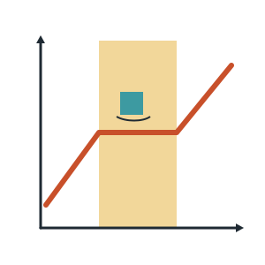
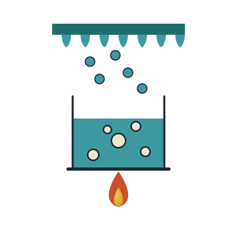
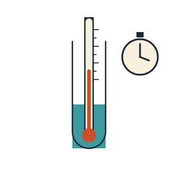
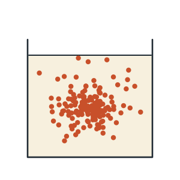
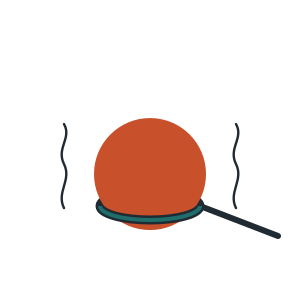
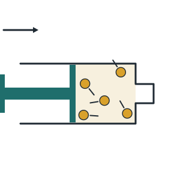
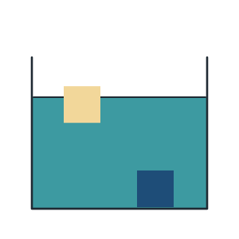
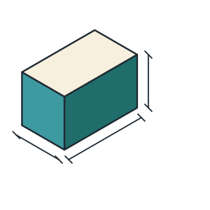
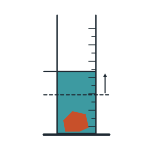

Contents
Each lesson’s deck, and the page it starts on in the printed booklet. Lessons marked “Deck coming” are in the booklet already; their slides are still being written.
Week 1
What matter is, how science models what we can’t see, and a first experiment.
Week 2
The particle model — what it says, the motion it predicts, and where it stops working.
Week 3
Changes of state explained with particles, and a cooling curve of our own.

7
Deck coming
Melting and Freezing
Turn to page 57
Changes of state, melting point, melting and freezing with particles, and reading a heating curve.

8
Deck coming
Boiling, Evaporation and Condensation
Turn to page 65
Evaporation and boiling compared, boiling point, condensation and sublimation.

9
Deck coming
Experiment 2: A Cooling Curve
Turn to page 72
Measuring temperature over time, drawing the line graph, finding the freezing point and explaining the flat section.
Week 4
Particles on the move — diffusion, expansion, and the pressure a gas pushes with.

10
Deck coming
Diffusion
Turn to page 81
Particles spreading out in liquids and gases, how temperature changes the speed, and food colouring in hot and cold water.

11
Deck coming
Expansion and Contraction
Turn to page 89
Why things get bigger when heated, expansion in solids, liquids and gases, and designing for it.

12
Deck coming
Gas Pressure
Turn to page 96
Pressure from particle collisions, squashing a gas, heating a sealed gas, and the air pressure all around us.
Week 5
Density — what it means, how to calculate it, and measuring it by displacement.

13
Deck coming
What Density Means
Turn to page 103
Heavy for its size, density and particles, floating and sinking, and the density of the three states.

14
Deck coming
Calculating Density
Turn to page 110
The density formula, the volume of a block, identifying a substance, and predicting floating from a calculation.

15
Deck coming
Experiment 3: Density by Displacement
Turn to page 117
Finding the volume of an irregular object by displacement, then its density, to identify the material.
Everything on the tabs above, with what each one holds.